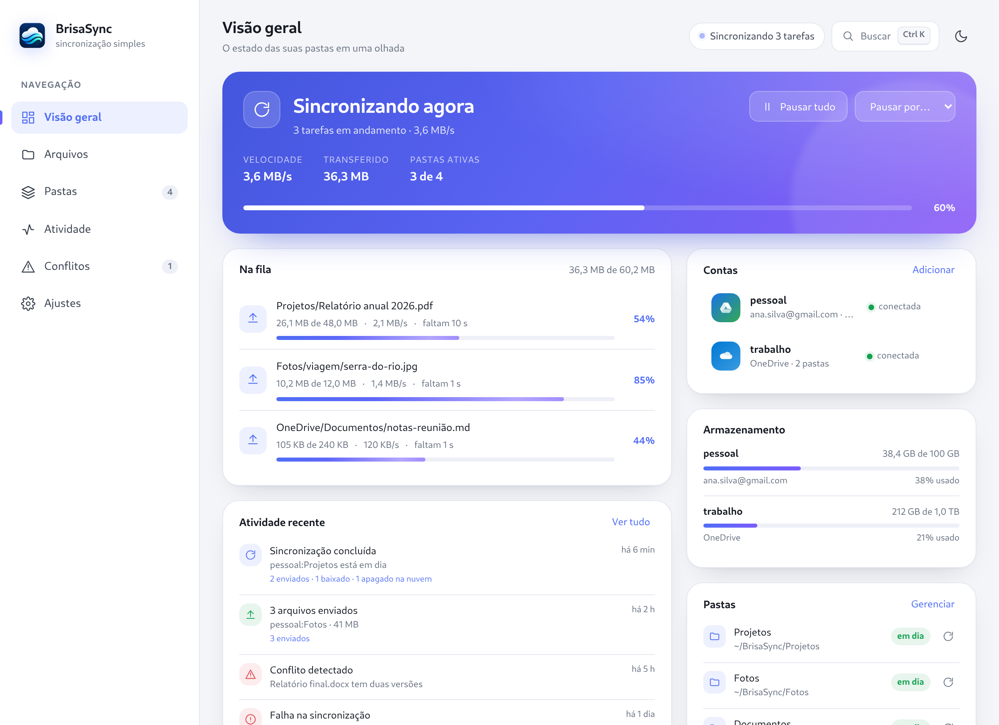

O que há de novo na versão 1.0.0
Construído em Rust e Tauri 2 com o motor bisync do rclone embutido em todos os pacotes.
-
Quatro provedores integrados
Conecte contas do Google Drive, OneDrive, Dropbox e Nextcloud no mesmo lugar, com suporte a credenciais OAuth próprias no Google.
-
Detecção rápida na nuvem
Consulta leve às APIs de alterações do Google Drive e OneDrive a cada 30 segundos, evitando varreduras pesadas quando nada mudou.
-
Sincronização seletiva visual
Escolha quais subpastas da nuvem sincronizar ou ignorar em cada perfil sem precisar editar regras de filtro manualmente.
-
Envio múltiplo por arrastar e soltar
Arraste arquivos e pastas inteiras direto para o navegador de arquivos da nuvem ou baixe itens avulsos sob demanda.
-
Bandeja com progresso e atualizador integrado
Acompanhe velocidade e andamento na bandeja do sistema e instale novas versões pelo próprio aplicativo.
Projetado para uso diário sem surpresas
Cada detalhe prioriza a integridade dos seus arquivos e o baixo consumo de memória.
Sincronização bidirecional real
Alterações locais são detectadas na hora pelo observador do sistema e enviadas com conferência de integridade pelo motor rclone bisync.
Conflitos resolvidos lado a lado
Quando um arquivo muda nos dois lados ao mesmo tempo, você compara e escolhe qual versão manter — e a sincronização retoma imediatamente.
Trava contra exclusões em massa
Se uma pasta esvaziar de repente por erro ou desmontagem de disco, o BrisaSync interrompe o ciclo antes de apagar o outro lado.
Navegador de arquivos sob demanda
Explore pastas remotas, baixe itens avulsos ou envie novos arquivos sem precisar espelhar toda a sua nuvem no disco.
Controle de banda e comportamento
Defina limites de upload e download, inicialização automática com o sistema e fechamento discreto para a bandeja.
Código aberto e zero telemetria
Licença MIT, sem anúncios e sem servidor próprio: seus dados trafegam diretamente entre o seu computador e o provedor escolhido.
Capturas do aplicativo
Interface adaptativa com temas claro e escuro para Linux e Windows.

Baixar para Linux e Windows
Escolha o pacote adequado para o seu sistema na release v1.0.0. O rclone já vai embutido.
Debian, Ubuntu, Mint
Pacote nativo .deb com integração à bandeja.
sudo apt install ./BrisaSync_1.0.0_amd64.deb
Qualquer Linux
AppImage portátil, pronto para executar.
chmod +x BrisaSync_1.0.0_amd64.AppImage && ./BrisaSync_1.0.0_amd64.AppImage
Flatpak
Pacote isolado (app.brisasync.BrisaSync).
flatpak install BrisaSync-1.0.0-x86_64.flatpak
Windows 10 / 11
Versão portátil .zip (extrair e executar BrisaSync.exe).
BrisaSync-1.0.0-windows-x64.zip
Apoie o projeto via Pix
O BrisaSync é gratuito e de código aberto. Se ele ajuda no seu dia a dia, considere apoiar o desenvolvimento.